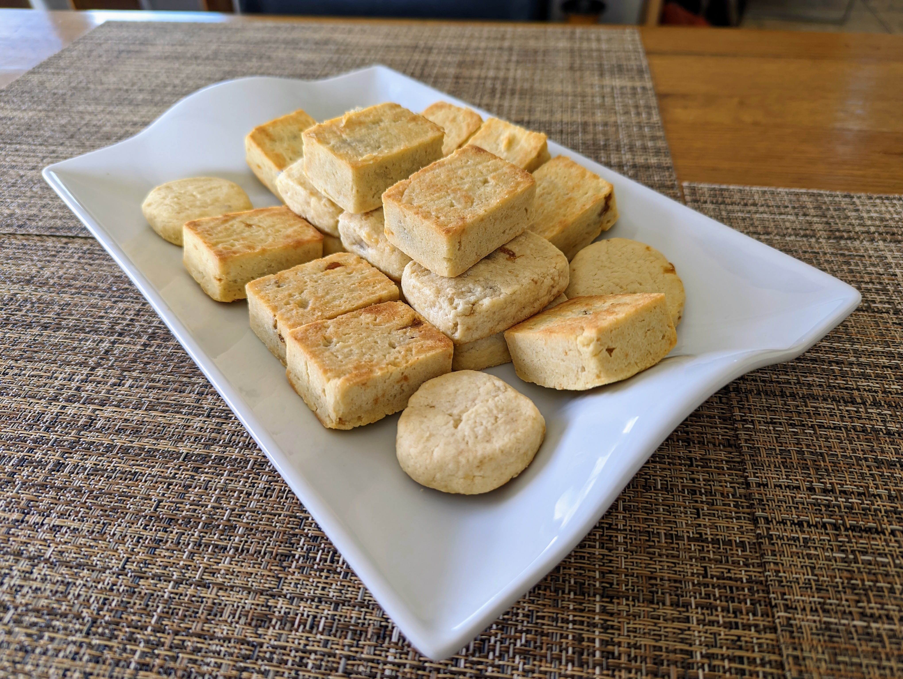

|  | |
| 1 | whole pineapple |
| 60g | dark brown sugar |
| 40g | maltose |
| ◇ | |
| 200g | unsalted butter |
| 140g | sugar |
| 2 | egg |
| 300g | cake flour |
| 60g | milk powder |
| 4g | salt |
Peel and core the pineapple removing any tough parts. Cut into small pieces. Add the brown sugar and cook on medium low heat until all liquids have evaporated and the sugars start caramelizing to a golden brown color. Then add the maltose and keep cooking until deep brown.
Transfer pineapple filling to a 8"×8" casserole to stop cooking and refrigerate. The filling must be cold to be used. Can be prepared ahead of time.
Soften but don't melt the butter, and stir in the sugar with a whisk until smooth. Add eggs and keep whisking until incorporated. Add flour, milk powder, and salt and mix in by hand until a dough ball forms. Refrigerate to allow the flour to hydrate, about half an hour.
Preheat the oven to 350°F (175°C).
Weigh the filling and divide into 28 evenly sized portions. Set aside.
Weigh the dough and divide into 28 evenly sized balls.
To shape the pineapple cakes, hold a dough ball in one hand, push an indentation with the thumb of your other hand, add the filling to cavity, then gently pull the dough over the filling. You should end up with a filled dough ball that has an even and smooth shape. Gently squeeze the dough ball into a 50mm×40mm×16mm pineapple cake mold and place on a lined cookie sheet. Make sure the dough is pushed all the way into the corners and the surface of the dough is flat on both sides.
Bake for 15min. Then remove from the molds, flip over, and bake for another 5 to 10min. Let cool for at least 45min.